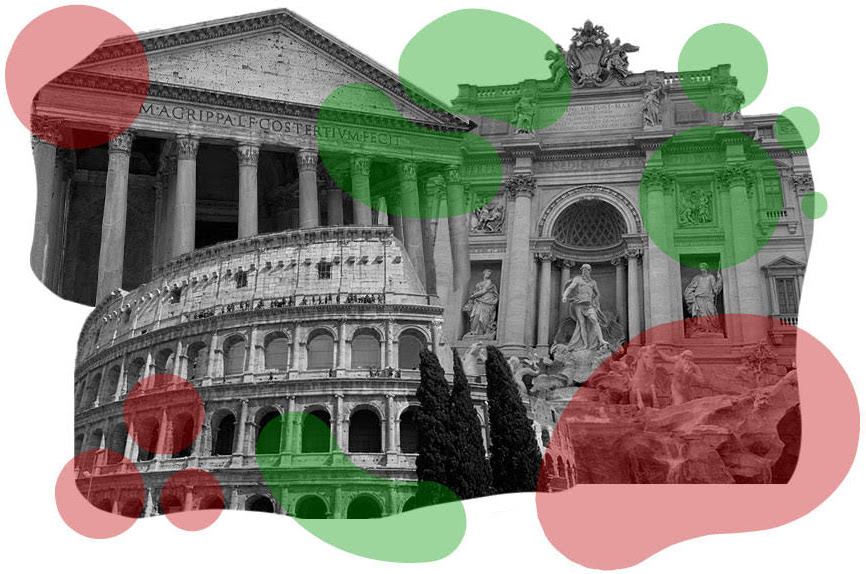
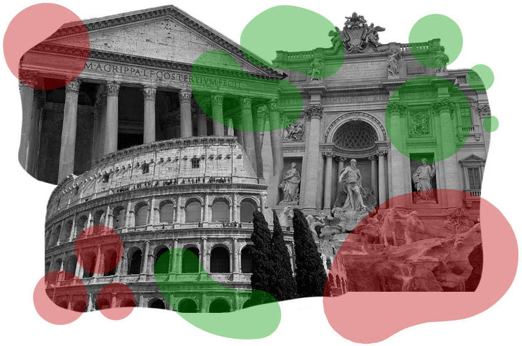

COLLESEUM
Packed
with ancient history, the Colosseum
is one of the most recognized landmarks and ruins in Rome. Dating back over
2,000 years it was once the ground for legendary gladiator contests that
would entertain the masses. These brave gladiators
would fight in the arena in front of thousands, often against wild animals and
those with weapons far greater than theirs.
PANTHEON
The
Pantheon is the best-preserved building from Ancient Rome and was
completed in c. 125 CE in the reign of Hadrian Its magnificent dome is a lasting
testimony to the genius of Roman architects and as the building stands virtually
intact it offers a unique opportunity for the modern visitor to step back 2,000 years
and experience the glory that was Rome. Suggested to have served as a temple.
TREVI FOUNTAIN
Set within the winding cobbled streets of central Rome, this huge
baroque fountain is considered one of the best in the world and has embellished
the streets of Rome since 1726. The Trevi Fountain’s intricate sculpture and marble
draw in over 3.5 million tourists a year thanks to the efforts of Bernini and Salvi
who can take full credit for this baroque masterpiece.
 

COLLESEUM
Ricco
di storia antica, il Colosseo è uno dei monumenti e delle rovine più riconosciuti
di Roma. Risalente a oltre 2.000 anni fa, un tempo era teatro di leggendarie gare
di gladiatori che avrebbero intrattenuto le masse. Questi coraggiosi gladiatori
combatterebbero nell'arena di fronte a migliaia, spesso contro animali selvatici
e quelli con armi molto più grandi delle loro.
PANTHEON
Il
Pantheon è l'edificio meglio conservato dell'antica Roma e fu completato nel
c. 125 d.C. sotto il regno di Adriano La sua magnifica cupola è una testimonianza
indelebile del genio degli architetti romani e poiché l'edificio è praticamente
intatto offre un'opportunità unica per il visitatore moderno di fare un passo
indietro di 2.000 anni e sperimentare la gloria che era Roma. Ha suggerito di
aver servito come tempio.
FONTANA DI TREVI
Situata tra le tortuose strade acciottolate del centro di Roma, questa
enorme fontana barocca è considerata una delle migliori al mondo e abbellisce le
strade di Roma dal 1726. L'intricata scultura e il marmo della Fontana di Trevi
attirano oltre 3,5 milioni di turisti all'anno grazie a gli sforzi di Bernini e
Salvi che possono prendersi tutto il merito di questo capolavoro barocco.